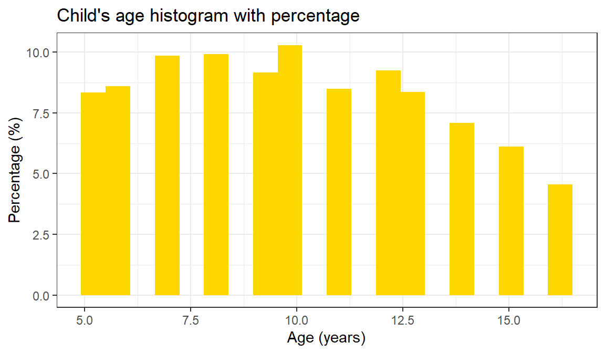
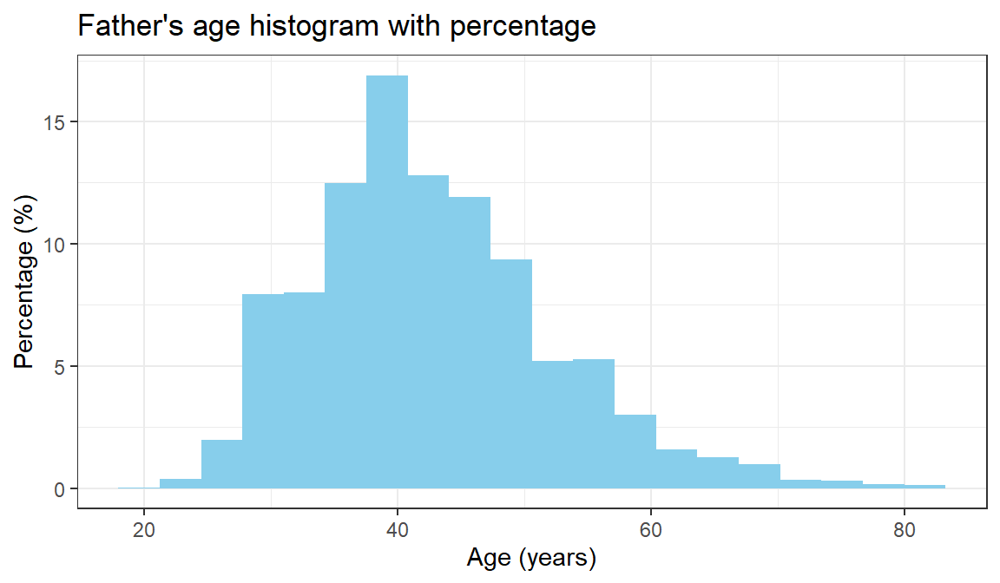
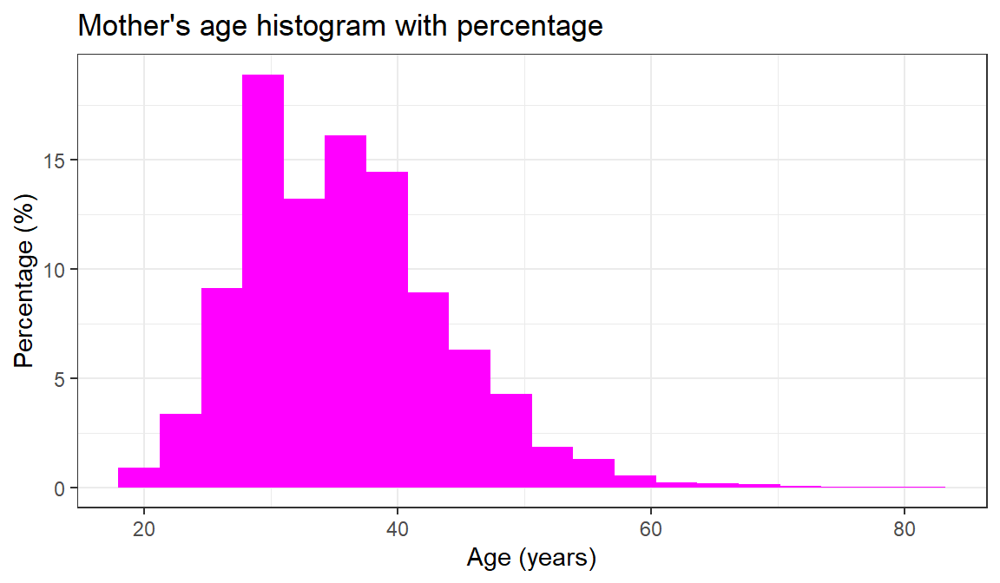
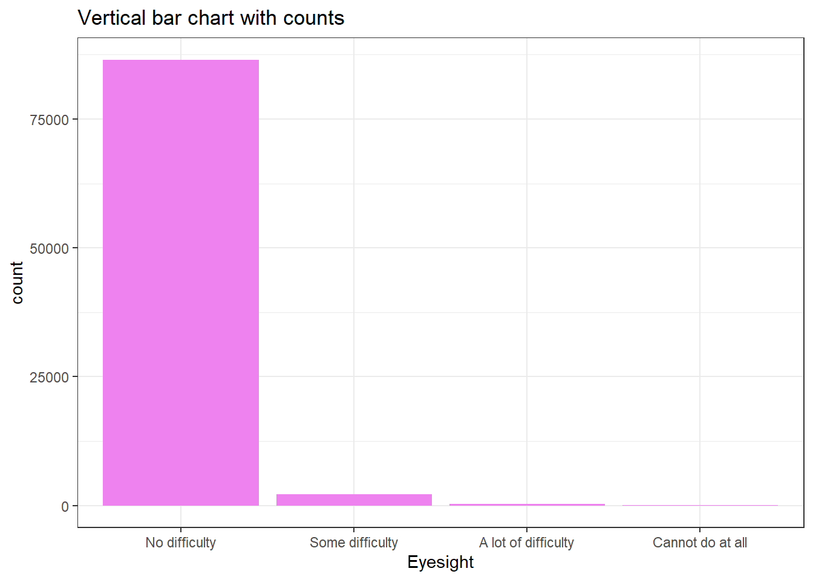
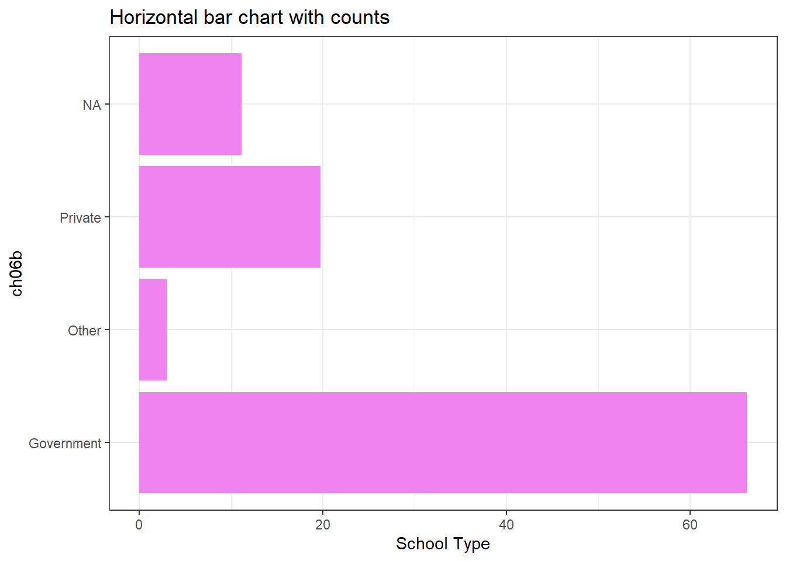

Chapter 3 Understanding distributions
Large survey datasets contain many variables and many observations. To learn from such data, you need tools that summarise patterns clearly and accurately. This chapter introduces distributions—the way a variable’s values are spread across the sample—and shows how to describe distributions using tables, summary statistics, and simple plots. Because the ICAN-ICAR data come from a complex survey, we also show how to produce weighted summaries that reflect the target population.
3.1 Getting oriented to the data
Firstly, check the number of rows and columns to get a sense of how big the data.
## [1] 89141 142This is quite big. A good idea from here is to subset to the variables that we want to explore. The dplyr package has a select function that allows one to select and rearrange variables. For this session, we focus only on the child’s age, parent’s age, gender, enrollment status, and whether or not the child has met the minimum proficiency level for both numeracy and literacy.
dat = dat |>
select(CountryName, Location, HHID,VillageID, ChildID, Tier_One_Unit,
ch02, ch03, ch06a, ch06b, enr_status, pt02b,
pt01b, ch04a, MPL_both, HH_Weight_Provided) One can use the skim() function from skimr package to attain a broad view of the data and get useful summary statistics on each variable. It is useful because it handles data of all types and it is an alternative to summary().
| Name | dat |
| Number of rows | 89141 |
| Number of columns | 16 |
| _______________________ | |
| Column type frequency: | |
| character | 7 |
| numeric | 9 |
| ________________________ | |
| Group variables | None |
Variable type: character
| skim_variable | n_missing | complete_rate | min | max | empty | n_unique | whitespace |
|---|---|---|---|---|---|---|---|
| CountryName | 0 | 1 | 4 | 10 | 0 | 11 | 0 |
| Location | 0 | 1 | 5 | 5 | 0 | 2 | 0 |
| HHID | 0 | 1 | 41 | 41 | 0 | 54777 | 0 |
| VillageID | 0 | 1 | 4 | 4 | 0 | 627 | 0 |
| ChildID | 0 | 1 | 48 | 66 | 0 | 89141 | 0 |
| Tier_One_Unit | 0 | 1 | 3 | 27 | 0 | 267 | 0 |
| enr_status | 0 | 1 | 13 | 18 | 0 | 3 | 0 |
Variable type: numeric
| skim_variable | n_missing | complete_rate | mean | sd | p0 | p25 | p50 | p75 | p100 | hist |
|---|---|---|---|---|---|---|---|---|---|---|
| ch02 | 0 | 1.00 | 10.04 | 3.22 | 5.00 | 7.00 | 10.00 | 13.00 | 16.00 | ▇▆▆▅▅ |
| ch03 | 0 | 1.00 | 1.49 | 0.50 | 1.00 | 1.00 | 1.00 | 2.00 | 2.00 | ▇▁▁▁▇ |
| ch06a | 9915 | 0.89 | 4.15 | 2.91 | 0.00 | 2.00 | 4.00 | 6.00 | 13.00 | ▇▇▃▃▁ |
| ch06b | 9909 | 0.89 | 1.29 | 0.52 | 1.00 | 1.00 | 1.00 | 2.00 | 3.00 | ▇▁▂▁▁ |
| pt02b | 39813 | 0.55 | 42.70 | 9.56 | 18.00 | 36.00 | 41.00 | 48.00 | 80.00 | ▂▇▆▂▁ |
| pt01b | 25863 | 0.71 | 35.87 | 8.01 | 18.00 | 30.00 | 35.00 | 40.00 | 80.00 | ▅▇▂▁▁ |
| ch04a | 0 | 1.00 | 1.04 | 0.22 | 1.00 | 1.00 | 1.00 | 1.00 | 4.00 | ▇▁▁▁▁ |
| MPL_both | 3 | 1.00 | 0.29 | 0.45 | 0.00 | 0.00 | 0.00 | 1.00 | 1.00 | ▇▁▁▁▃ |
| HH_Weight_Provided | 0 | 1.00 | 2923.45 | 3495.25 | 0.42 | 540.31 | 2009.69 | 3642.96 | 52586.05 | ▇▁▁▁▁ |
complete_rate tells us the proportion of rows that are not missing for that particular variable. For instance, pt02b has only \(55,4\%\) of rows that have entries. In other words, this is equivalent to \(39813\) missings (see also, n_missing) out of the \(89141\) rows. It is important to see that if one does not specify correctly the variable type, then skim() will not pick that up. The child’s gender, ch03, is being recognized as a continuous variable instead of a categorical variable. Therefore, one should make sure that the variables are in their correct type to ensure correct variable summaries .
3.2 Levels of measurement
Any variable is composed of two or more categories or attributes. Thus the child’s gender is a variable with the categories male and female, country of birth is a variable with the categories being particular countries. The level of measurement of variables refers to how the categories of the variable relate to one another. There are three main levels of measurement: continuous, ordinal and categorical. Three characteristics of the categories of a variable determine its level of measurement:
- whether there are different categories;
- whether the categories can be rank ordered;
- whether the differences or intervals between each category can be specified in a meaningful numerical sense.
3.2.1 Continuous level
A continuous variable is one in which the categories can be ranked from low to high in some meaningful way. In addition to ordering the categories from low to high it is possible to specify the amount of difference between the categories or values. The child’s age, when measured in years, is an example of a continuous variable. We rank-order the categories of age (in years) from youngest (lowest) to oldest (highest). Furthermore, we can specify the amount of difference between the categories. The difference between the category “9 years old” and the category “13 years old” is 4 years. Other examples would be the number of household members, time taken to complete the numeracy assessment, and the numeracy score of the child.
We use the 5 number summary (box plot can also suffice) and a histogram to describe the distribution of continuous variables. In our data, we only have the parent’s age and child’s age as continuous variables.
| Name | select(dat, ch02, pt02b, … |
| Number of rows | 89141 |
| Number of columns | 3 |
| _______________________ | |
| Column type frequency: | |
| numeric | 3 |
| ________________________ | |
| Group variables | None |
Variable type: numeric
| skim_variable | n_missing | complete_rate | mean | sd | p0 | p25 | p50 | p75 | p100 | hist |
|---|---|---|---|---|---|---|---|---|---|---|
| ch02 | 0 | 1.00 | 10.04 | 3.22 | 5 | 7 | 10 | 13 | 16 | ▇▆▆▅▅ |
| pt02b | 39813 | 0.55 | 42.70 | 9.56 | 18 | 36 | 41 | 48 | 80 | ▂▇▆▂▁ |
| pt01b | 25863 | 0.71 | 35.87 | 8.01 | 18 | 30 | 35 | 40 | 80 | ▅▇▂▁▁ |
The typical age in years the children belong is \(10\) years old, while it is \(36\) and \(43\) years old for the mother and father respectively. The child’s age is spread fairly evenly across the age categories relative to both the mother and father’s ages (see the standard deviation). If one had to order the children by age from the youngest (\(5\)) to the oldest (\(16\)), then the middle child would be \(10\) years old.
Now, let us assess whether the categories of each variable tend to cluster towards the low or the high end. And possibly identify the potential outliers.
# Histograms and box plot
## child's age
ggplot(dat, aes(x = ch02)) +
geom_histogram(
bins = 20,
aes(y = after_stat(count / sum(count) * 100)),
fill = "gold"
) +
labs(x = "Age (years)", y = "Percentage (%)",
title = "Child's age histogram with percentage") +
theme_bw()
Figure 3.1: Distribution of child age in the ICAN-ICAR sample.
## father's age
ggplot(dat, aes(x = pt02b)) +
geom_histogram(
bins = 20,
aes(y = after_stat(count / sum(count) * 100)),
fill = "skyblue"
) +
labs(x = "Age (years)", y = "Percentage (%)",
title = "Father's age histogram with percentage") +
theme_bw()
Figure 3.2: Distribution of child age in the ICAN-ICAR sample.
## mother's age
ggplot(dat, aes(x = pt01b)) +
geom_histogram(
bins = 20,
aes(y = after_stat(count / sum(count) * 100)),
fill = "magenta"
) +
labs(x = "Age (years)", y = "Percentage (%)",
title = "Mother's age histogram with percentage") +
theme_bw()
Figure 3.3: Distribution of child age in the ICAN-ICAR sample.
For the child’s age there is no evidence clustering - the variable is spread fairly evenly across the categories. Both the mother’s and father’s age cluster at the lower end of their respective distributions, with tails on the high end.
3.2.2 Ordinal level
An ordinal variable is one where we can rank-order categories from low to high. However, we cannot specify in numeric terms how much difference there is between the categories. For example, when the age variable has categories such as “child”, “adolescent”, “young adult”, “middle aged” and “elderly” the variable is measured at the ordinal level. The categories can be ordered from youngest to eldest but we cannot specify precisely the age gap between people in different categories. Measuring the child’s difficulty in their eyesight as “no difficulty”, “some difficulty”, and “a lot of difficulty” would produce an ordinal variable.
Typically, one can describe the distribution of an ordinal variable by asking about the frequency of children belonging to particular categories, asking which categories have a lot of cases and which have fewer cases. In that a frequency table will suffice.
Since the categories of ordinal variables can be ranked these categories should be put in their correct rank order in a frequency table. Failure to do so will distort both patterns in the data and statistics used to summarise them.
# first insert appropriate labels
dat = dat |>
mutate(
ch04a = as.character(ch04a),
ch04a = case_when(
ch04a == "1" ~ "No difficulty",
ch04a == "2" ~ "Some difficulty",
ch04a == "3" ~ "A lot of difficulty",
ch04a == "4" ~ "Cannot do at all",
TRUE ~ ch04a
)
)
# convert to ordered factor
dat = dat |>
mutate(
ch04a = factor(ch04a, levels = c("No difficulty",
"Some difficulty",
"A lot of difficulty",
"Cannot do at all"),
ordered = TRUE)
)Now, we are set to create a frequency table for the eyesight variable.
## # A tibble: 4 × 3
## ch04a n percent
## <ord> <int> <dbl>
## 1 No difficulty 86537 97.1
## 2 Some difficulty 2185 2.45
## 3 A lot of difficulty 302 0.339
## 4 Cannot do at all 117 0.131Pay attention to the description of ch04a - R recognizes it as an <ord> now. From the table, we can see that only \(2,9\%\) children in the sample have some form of difficulty in their eyesight, even after wearing glasses. One category in this variable accounts for the bulk of the cases. One can say that this sample is fairly homogeneous with regards to ch04a . In other words, the frequency table is not symmetrical because most of the cases are clustered at one end of a distribution of this ordinal variable. When cases are clustered at the low end the distribution is positively skewed.
Sometimes ordinal variables can often be displayed effectively with graphs. Now, we can going to show how ch04a is distributed using a bar graph.
dat |>
ggplot(aes(x = ch04a))+
geom_bar(fill = "violet")+
theme_bw() +
labs(title = "Vertical bar chart with counts",
x = "Eyesight")
While the mode as a measure of central tendency can be for ordinal variables the median is preferred because it takes account of the fact that children can be ranked on ordinal variables. The median is worked out by ranking each case in a distribution from low to high on the variable and finding the middle child. Whatever the category the middle child belongs to is the median category. In large scale survey research, this is done by obtaining a frequency table, as we have done above, for the variable and examining the cumulative percentage column. To locate the median simply look down this column until the cumulative percentage nudges over \(50\) percent and then look at the category of the variable that corresponds to this. Inch04a case, the middle child is the one with no difficulty in eyesight.
3.2.3 Categorical level
A categorical variable is one where the different categories have no set rank-order. With a categorical variable it makes no sense to say that the categories can be ordered from low to high in some sense. The type of school the child goes to (ch06b) is a categorical variable where categories have no natural rank-order.
Two main types of summarising statistics are used for categorical variables to describe their distributions: those used to indicate typical values (central tendency), and those used to indicate group variation With categorical variables the only way to indicate the typical response is to identify the single most common response. The most common response, the one with the largest number of cases, is called the mode.
# firstly, give proper labels
dat = dat |>
mutate(
ch06b = as.character(ch06b),
ch06b = case_when(
ch06b == "1" ~ "Government",
ch06b == "2" ~ "Private",
ch06b == "3" ~ "Other",
TRUE ~ ch06b
)
)
# create a frequency table
dat |>
count(ch06b) |>
mutate(percent = 100*(n/sum(n)))## # A tibble: 4 × 3
## ch06b n percent
## <chr> <int> <dbl>
## 1 Government 59007 66.2
## 2 Other 2664 2.99
## 3 Private 17561 19.7
## 4 <NA> 9909 11.1In the table above, the single most common response is “Government”, thus “Government” schools is the mode of the ch04a. But, sometimes using the mode to measure the typical response is problematic. Picking the most common response does not tell us how typical it is. In that case, we have to provide a way of summarising how diverse a group is. For categorical variables the appropriate measure of variation is the variation ratio. It is easily calculated by seeing what percentage of children are not in the model category. The variation ratio is normally expressed as a proportion. This is simply done by moving the decimal place on the percentage figure (percent not in modal category) two places to the left. Thus in the frequency table, the mode is “Government” which contains \(66,2\%\) of the sample. The percentage not in the model category is therefore \(33.8\%\). The variation ratio therefore is \(0,33\).
It is desirable to use a measure of variation alongside a measure of central tendency. The measure of central tendency gives us an idea of what is typical while the measure of variation gives us a sense og how typical typical is. The more variation there is in a sample the less well the average summarises the sample. In the case of the variation ratio - the higher the variation ratio the more poorly the mode summarises the overall distribution of the categorical variable.
A bar chart is most appropriate graphical tool one can use to describe the distribution of a categorical variable.
dat |>
ggplot(aes(x = ch06b))+
geom_bar(
aes(y = after_stat(count / sum(count) * 100)),
fill = "violet"
) +
coord_flip() +
theme_bw() +
labs(title = "Horizontal bar chart with counts",
y= "School Type")
The table below summarises the graphical representation that can be used to describe variables at each of the three levels of measurement. Consider these everytime.| Graph type | Categorical | Ordinal | Continuous |
|---|---|---|---|
| Bar charts | ✓ | ✓ | ? |
| Line graphs | ✗ | ? | ✓ |
| Area graph | ✗ | ? | ✓ |
| Histogram | ✗ | ✗ | ✓ |
| Boxplot | ✗ | ✓ | ✓ |
| Pie chart | ✓ | ✓ | ? |
Also, the table below helps one to choose summary descriptive statistics for different levels of measurement
| Category | Statistic | Categorical | Ordinal | Continuous |
|---|---|---|---|---|
| Averages | Mode | ✓ | ? | ? |
| Median | ✗ | ✓ | ? | |
| Mean | ✗ | ✗ | ✓ | |
| Dispersion/variation | Variation ratio | ✓ | ? | ? |
| Interquartile range | ✗ | ✓ | ? | |
| Variance/standard deviation | ✗ | ✗ | ✓ | |
| Symmetry | Graph/visual | ✗ | ✓ | ✓ |
| Skewness statistic | ✗ | ✗ | ✓ | |
| Kurtosis | Graph/visual | ✗ | ✓ | ✓ |
| Kurtosis statistic | ✗ | ✗ | ✓ |
3.3 Weighted summaries using the survey design
Unweighted summaries describe the sample. To describe the population, you must account for weights, clustering, and stratification.
We create a survey design object using the same structure used elsewhere in the course.
options(
survey.lonely.psu = "adjust",
survey.adjust.domain.lonely = TRUE
)
des_child_all = svydesign(
ids = ~interaction(CountryName, VillageID) + HHID,
strata = ~interaction(CountryName, Tier_One_Unit),
weights = ~HH_Weight_Provided,
data = dat,
nest = TRUE
)3.4 Household-level variables in a child-level file
When a household-level variable repeats across children, a child-level frequency table over-weights large households. A simple fix is to keep one record per household.
dat = dat |>
arrange(HHID, ChildID) |>
group_by(HHID) |>
mutate(hh_first = row_number() == 1) |>
ungroup()For example, compare a child-level and household-level distribution of roof type (hh07a), if that variable is available in your extract.
# child-level distribution (counts children)
dat |>
count(hh07a) |>
mutate(percent = 100 * n / sum(n))
# household-level distribution (counts households once)
dat |>
filter(hh_first) |>
count(hh07a) |>
mutate(percent = 100 * n / sum(n))To produce a weighted household-level distribution, subset the survey design to one row per household.
options(
survey.lonely.psu = "adjust",
survey.adjust.domain.lonely = TRUE
)
des_child_all = svydesign(
ids = ~interaction(CountryName, VillageID) + HHID,
strata = ~interaction(CountryName, Tier_One_Unit),
weights = ~HH_Weight_Provided,
data = dat,
nest = TRUE
)
des_household = subset(des_child_all, hh_first)
roof_w = svytable(~hh07a, des_household)
tibble(
roof_type = names(roof_w),
percent = as.numeric(100 * prop.table(roof_w))
)3.5 Missing data and skip patterns
Missing values are common in survey data. In ICAN-ICAR, missingness often reflects skip patterns. For example, grade (ch06a) is usually recorded only for learners who are currently enrolled.
Start by checking how much is missing.
dat |>
summarise(
total = n(),
missing_ch06a = sum(is.na(ch06a)),
missing_pct = 100 * sum(is.na(ch06a)) / n()
)## # A tibble: 1 × 3
## total missing_ch06a missing_pct
## <int> <int> <dbl>
## 1 89141 9915 11.1Then evaluate whether missingness aligns with enrolment status.
dat |>
group_by(enr_status) |>
summarise(
total = n(),
missing_ch06a = sum(is.na(ch06a)),
missing_pct = 100 * sum(is.na(ch06a)) / n()
) |>
arrange(desc(total))## # A tibble: 3 × 4
## enr_status total missing_ch06a missing_pct
## <chr> <int> <int> <dbl>
## 1 Currently Enrolled 79397 171 0.215
## 2 Never Enrolled 7517 7517 100
## 3 Out of School 2227 2227 100You can also estimate weighted missingness rates by subgroup.
## enr_status I(is.na(ch06a))FALSE I(is.na(ch06a))TRUE
## Currently Enrolled Currently Enrolled 0.9991602 0.0008397509
## Never Enrolled Never Enrolled 0.0000000 1.0000000000
## Out of School Out of School 0.0000000 1.0000000000
## se.I(is.na(ch06a))FALSE se.I(is.na(ch06a))TRUE
## Currently Enrolled 0.0001091877 0.0001091877
## Never Enrolled 0.0000000000 0.0000000000
## Out of School 0.0000000000 0.00000000003.6 Exercises
Use the ICAN-ICAR data and the tools in this chapter to answer the questions below.
- What proportion of the sample is rural (
Location == "Rural")? Compute both the unweighted and weighted estimate. - What is the unweighted and weighted mean child age (
ch02) for enrolled learners (enr_status == "Currently Enrolled")? - Create an age group variable (for example,
<= 10vs> 10). What share of learners falls in each age group? - Produce a weighted frequency table for
Locationwithin one country of your choice. - Investigate missingness in
ch06abyresidenceand bysex. Report the results as unweighted and weighted proportions.